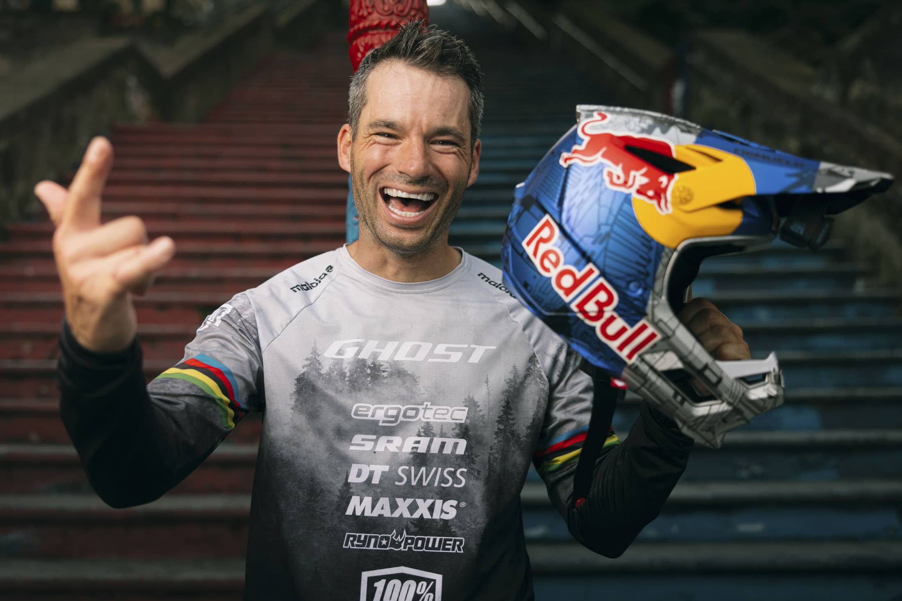
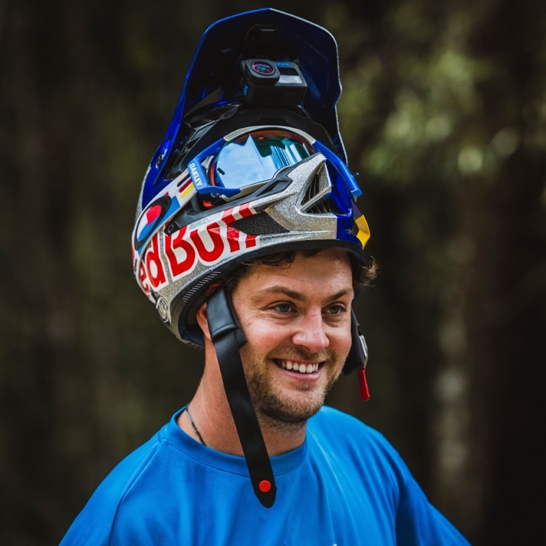
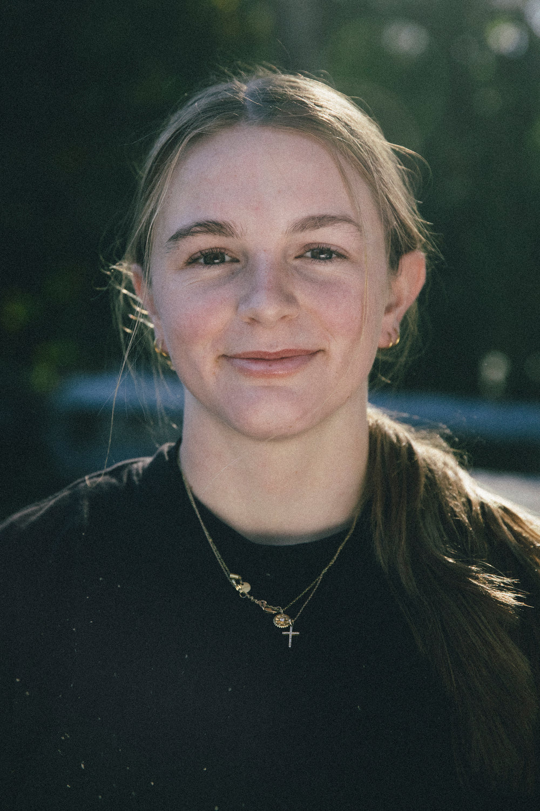

Dano "Enduro" Mašinka
Zakladatel & Hlavní tester
Dano založil All for Bikes po 10 letech závodění. Má na starosti výběr těch nejlepších kol.
All for Bikes vzniklo z čisté vášně pro dvě kola. Nejsme jen obyčejný e-shop, jsme komunita jezdců, kteří testují každý model, který u nás najdete.
Věříme, že kolo je nejlepší nástroj pro svobodu. Proto se zaměřujeme na značky, které posouvají hranice technologií a designu.
Sami jezdíme, takže víme, co prodáváme.
Santa Cruz, Specialized, Kona a další.

Zakladatel & Hlavní tester
Dano založil All for Bikes po 10 letech závodění. Má na starosti výběr těch nejlepších kol.

Vedoucí servisu
Pokud vám v kole něco skřípe, Venda je ten, kdo to opraví. Expert na seřízení a nastavení.

Community manager
Organizátorka našich společných vyjížděk a expertka na gravel biky.